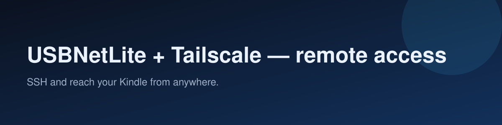

USBNetLite + Tailscale — remote access
SSH and reach your Kindle from anywhere.

Last reviewed: 2026-11-13
Get a shell over USB/Wi-Fi, then reach the device from anywhere with a mesh VPN.
1. SSH over USB / Wi-Fi (USBNetLite)
- Install USBNetLite via KPM (or the release zip). → https://github.com/notmarek/kindle-usbnetlite
- Run it and choose USB or Wi-Fi mode; note the IP (USB usbnet is often
192.168.15.244). - Set a root password before exposing it on Wi-Fi.
- From your computer:
ssh root@<kindle-ip>.
2. Tailscale (reach it anywhere)
- On the Kindle shell, install a Tailscale binary for its arch (armel/armhf) — or use a KUAL package if available.
tailscale upand authenticate; note the device's100.x.y.ztailnet IP.- From any of your devices on the tailnet:
ssh root@100.x.y.z.
Safety
- Root shell can break the system: keep Hotfix installed and a backup.
- Don't expose SSH to the public internet; use the tailnet.
- Battery: Wi-Fi + VPN drains fast; disable when not needed.
中文速览
- KPM 装 USBNetLite → 选 USB/Wi-Fi 模式 → 设 root 密码 →
ssh root@<ip>（USB 常见192.168.15.244）。 - Kindle 上装对应架构的 Tailscale →
tailscale up→ 任意设备ssh root@100.x.y.z。 - 风险：root 能搞坏系统，装 Hotfix + 备份；不要把 SSH 暴露公网；常开 Wi-Fi+VPN 耗电。